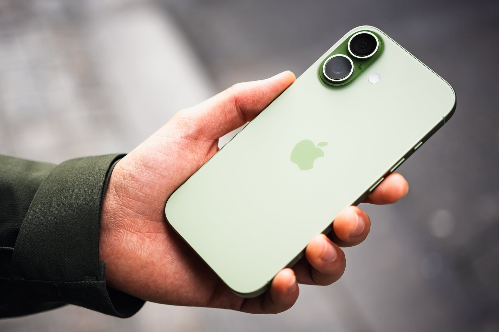

iPhone 18 : pourquoi vous ne pourrez probablement pas l’acheter en septembre

Les géants de la tech concentrent une part croissante de l'innovation mondiale. Leurs annonces ont un impact direct sur les utilisateurs, les développeurs et l'ensemble du secteur.
Ce qu'il faut retenir
Apple préparerait une sortie en deux temps pour sa gamme iPhone 18.
Faute de composants suffisants, le modèle standard verrait son lancement reporté à début 2027, laissant le champ libre aux déclinaisons Pro en septembre et pour les fêtes de fin d’année.
Pourquoi c'est important
Cette information conforte la position des grands groupes de la tech dans l'économie mondiale. Elle concerne directement les utilisateurs de technologies numériques et mérite d'être suivie de près dans les prochaines semaines. iPhone 18 : pourquoi vous ne pourrez probablement pas l’acheter en septembre est ainsi un signal à prendre en compte pour comprendre les évolutions du secteur.
En résumé
Retenez l'essentiel : iPhone 18 : pourquoi vous ne pourrez probablement pas l’acheter en septembre. Cette actualité a été rapportée par 01net. Nous continuerons de suivre ce sujet et de vous tenir informés des prochaines évolutions.
🛒 En lien avec cet article
Liens de partenariat Amazon : une commission peut être reversée, sans surcoût pour vous.
Source : 01net